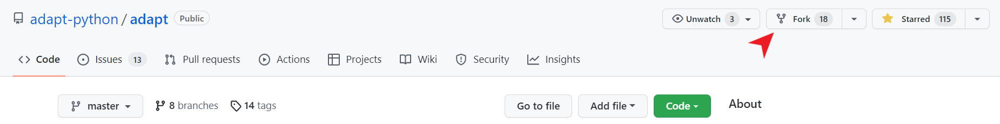
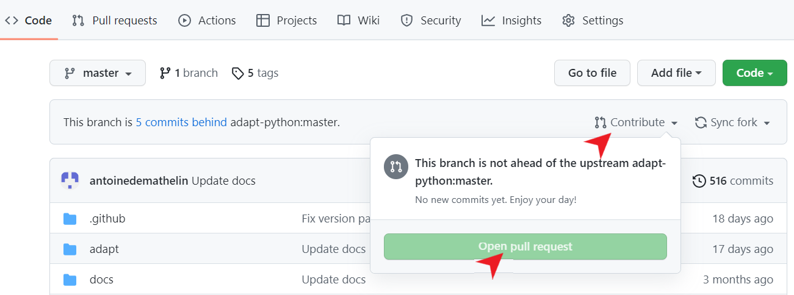

Developer Guide
This page is dedicated to developers who want to contribute to the ADAPT library.
The guide is divided is three parts:
Opening a pull request in ADAPT
Implementing a new Domain Adaptation method
Contributing to the documentation
1. Opening a pull request in ADAPT
First go on GitHub at https://github.com/adapt-python/adapt and fork the repository:

On your labtop, open a command prompt and clone your fork with the following command line:
git clone https://github.com/<your GitHub name>/adapt.git
Or:
git clone git@github.com:<your GitHub name>/adapt.git
Make changes in the cloned repository on your labtop. When you have finished, commit your changes and push them to your GitHub fork with the following command lines:
git add .
git commit -m "My changes"
git push
Finally,open a pull request on the main repository by selecting “Contribute” and “Open pull request” on your GitHub fork:

You can give a title to your pull request and a description of your changes. Your pull request will be reviewed and merged to the main repository if your code complies with the ADAPT library.
2. Implementing a new Domain Adaptation method
This part explains how to implement a novel DA method in the ADAPT style. Your implementation can be done in the cloned repository on your labtop (see previous part).
2.1 Implementing a classic DA method
If your proposed approach does not use deep learning, you should subclass the BaseAdaptEstimator object.
Let’s say you want to develop a simple feature-based approach which learns the PCA of the source domain and applies it to the target domain. The only thing you have to do is to implement the __init__, transform and fit_transform methods.
[22]:
from adapt.base import BaseAdaptEstimator
from sklearn.decomposition import PCA
class SrcPCA(BaseAdaptEstimator):
# Write a description of the algorithm, parameters and attributes.
"""
SrcPCA : Source PCA
SrcPCA learns the PCA on the source domain and applies it on the
target domain
Parameters
----------
estimator : sklearn estimator or Tensorflow Model
The task estimator.
Xt : array
The target input data.
n_components : int (default=2)
Number of principal components
Attributes
----------
estimator_ : sklearn estimator or Tensorflow Model
The fitted estimator
"""
def __init__(self,
estimator=None,
Xt=None,
n_components=2):
super().__init__(
estimator=estimator,
Xt=Xt
)
self.n_components = n_components
def fit_transform(self, Xs, Xt, **kwargs):
"""
Fit embeddings.
Parameters
----------
Xs : array
Input source data.
Xt : array
Input target data.
kwargs : key, value argument
Not used, present here for adapt consistency.
Returns
-------
Xs_emb : embedded source data
"""
self.pca_ = PCA(self.n_components)
Xs_emb = self.pca_.fit_transform(Xs)
return Xs_emb
def transform(self, X, **kwargs):
"""
Return aligned features for X.
Parameters
----------
X : array
Input data.
Returns
-------
X_emb : array
Embeddings of X.
"""
return self.pca_.transform(X)
You can now test your method on a simple case. For example you can use the make_classification_da function from adapt.utils
[42]:
from adapt.utils import make_classification_da
import matplotlib.pyplot as plt
Xs, ys, Xt, yt = make_classification_da()
plt.plot(Xs[ys==1, 0], Xs[ys==1, 1], "o", c="C0")
plt.plot(Xs[ys==0, 0], Xs[ys==0, 1], "*", c="C0")
plt.plot(Xt[yt==1, 0], Xt[yt==1, 1], "o", c="C1")
plt.plot(Xt[yt==0, 0], Xt[yt==0, 1], "*", c="C1")
plt.show()
Take one estimator from sklearn and test your novel DA algorithm. Note that the fit and score methods will call your implemented fit_transform and transform methods.
[41]:
from sklearn.linear_model import LogisticRegression
model = SrcPCA(LogisticRegression(penalty="none"), Xt=Xt, n_components=1)
model.fit(Xs, ys)
print("Score: %.3f"%model.score(Xt, yt))
Fit transform...
Fit Estimator...
Score: 0.930
Now, add your source code for SrcPCA to a file named _srcpca.py that you place in the adapt/feature_based folder. Modify the __init__.py file in the folder to add your method in the __all__ list.
Finally, you have to create a test file to perform some unit tests on your method. For this, create a file named test_scrpca.py in the tests folder. In this file, you can write the following code for example:
[ ]:
from adapt.feature_based import SrcPCA
from adapt.utils import make_classification_da
from sklearn.linear_model import LogisticRegression
def test_srcpca():
Xs, ys, Xt, yt = make_classification_da()
model = SrcPCA(LogisticRegression(penalty="none"), Xt=Xt, n_components=1)
model.fit(Xs, ys)
score = model.score(Xt, yt)
If you want to be sure that your tests are working, you can install the pytest package and run the tests:
pip install pytest pytest-cov
In the adapt folder
pytest tests/test_srcpca.py
2.2 Implementing a deep DA method
If your proposed approach is deep learning specific, you should subclass the BaseAdaptDeep object.
Let’s say you want to develop a feature-based approach which learns a deep representation where the source and target domains are both centered with variance close to one. The only think you have to do is to implement the __init__ and train_step methods.
[99]:
import tensorflow as tf
from adapt.base import BaseAdaptDeep
class CenterDomains(BaseAdaptDeep):
# Write a description of the algorithm, parameters and attributes.
"""
CenterDomains : Centering domains
CenterDomains learns a deep representation where the source and target domains
are both centered with variance close to one.
Parameters
----------
encoder : tensorflow Model (default=None)
Encoder netwok.
task : tensorflow Model (default=None)
Task netwok.
Xt : array
Target input data.
lambda_ : float (default=1.)
Trade-off between task and domain closeness.
Attributes
----------
encoder_ : tensorflow Model
Fitted encoder network.
task_ : tensorflow Model
Fitted task network.
"""
def __init__(self,
encoder=None,
task=None,
lambda_=1.,
Xt=None):
super().__init__(
encoder=encoder,
task=task,
Xt=Xt
)
self.lambda_ = lambda_
def train_step(self, data):
# Unpack the data.
Xs, Xt, ys, yt = self._unpack_data(data)
# loss
with tf.GradientTape() as task_tape, tf.GradientTape() as enc_tape:
# Forward pass
Xs_enc = self.encoder_(Xs, training=True)
ys_pred = self.task_(Xs_enc, training=True)
Xt_enc = self.encoder_(Xt, training=True)
# Reshape
ys_pred = tf.reshape(ys_pred, tf.shape(ys))
# Compute the loss value
task_loss = self.task_loss_(ys, ys_pred)
mean_src = tf.reduce_mean(Xs_enc, axis=0)
var_src = tf.math.reduce_variance(Xs_enc, axis=0)
mean_tgt = tf.reduce_mean(Xt_enc, axis=0)
var_tgt = tf.math.reduce_variance(Xt_enc, axis=0)
enc_loss = tf.square(mean_src) + tf.square(mean_tgt)
enc_loss += tf.square(1-var_src) + tf.square(1-var_tgt)
task_loss = tf.reduce_mean(task_loss)
enc_loss = tf.reduce_mean(enc_loss)
enc_loss = task_loss + self.lambda_ * enc_loss
task_loss += sum(self.task_.losses)
enc_loss += sum(self.encoder_.losses)
# Compute gradients
trainable_vars_task = self.task_.trainable_variables
trainable_vars_enc = self.encoder_.trainable_variables
gradients_task = task_tape.gradient(task_loss, trainable_vars_task)
gradients_enc = enc_tape.gradient(enc_loss, trainable_vars_enc)
# Update weights
self.optimizer.apply_gradients(zip(gradients_task, trainable_vars_task))
self.optimizer_enc.apply_gradients(zip(gradients_enc, trainable_vars_enc))
# Update metrics
self.compiled_metrics.update_state(ys, ys_pred)
self.compiled_loss(ys, ys_pred)
# Return a dict mapping metric names to current value
logs = {m.name: m.result() for m in self.metrics}
return logs
You can now test your method on a simple case. For example you can use the make_classification_da function from adapt.utils
[100]:
from adapt.utils import make_classification_da
import matplotlib.pyplot as plt
Xs, ys, Xt, yt = make_classification_da()
plt.plot(Xs[ys==1, 0], Xs[ys==1, 1], "o", c="C0")
plt.plot(Xs[ys==0, 0], Xs[ys==0, 1], "*", c="C0")
plt.plot(Xt[yt==1, 0], Xt[yt==1, 1], "o", c="C1")
plt.plot(Xt[yt==0, 0], Xt[yt==0, 1], "*", c="C1")
plt.show()
Create simple neural networks and test your novel deep DA algorithm.
[102]:
encoder = tf.keras.Sequential()
encoder.add(tf.keras.layers.Dense(100, activation="relu"))
encoder.add(tf.keras.layers.Dense(2))
task = tf.keras.Sequential()
task.add(tf.keras.layers.Dense(1, activation="sigmoid"))
model = CenterDomains(encoder=encoder,
task=task,
Xt=Xt,
lambda_=1.)
model.compile(loss="binary_crossentropy", optimizer="adam")
model.fit(Xs, ys, epochs=100, verbose=0)
print("Score: %.3f"%model.score(Xt, yt))
1/1 [==============================] - 0s 118ms/step - loss: 0.2461
Score: 0.246
You can also check that your encoded space behave as expected
[106]:
Xs_enc = model.transform(Xs)
Xt_enc = model.transform(Xt)
print(Xs_enc.mean(0), Xt_enc.mean(0))
print(Xs_enc.var(0), Xt_enc.var(0))
[-0.02707285 0.00268192] [-0.03096193 -0.06729582]
[0.9326022 0.9280451] [1.08319 1.0991981]
Finally, follow the instructions in 2.1 to add your implementation in the adapt folder and make the tests.
3. Contributing to the documentation
If you want to add examples of ADAPT usage to the documentation, this can be done by modifying the src_docs folder.
First, install all the packages you need for documentation:
sudo apt install pandoc or conda install pandoc
And,
pip install jinja2==3.0.3 sphinx==4.4.0 numpydoc==1.2 nbsphinx==0.8.8 sphinx_gallery==0.10.1 sphinx_rtd_theme==1.0.0 ipython==8.0.1
Then, make your example in a jupyter notebook and add it to the src_docs/examples folder
To make your example appear in the content page, add the path to your example in either src_docs/synthetic_examples.rst or src_docs/real_examples.rst file depending on which kind of example you have made.
You can check the rendering of your example by compiling the documentation with the following command line (executed in the adapt folder):
make html
You can now open the folder docs/html/ you will find a file named contents.html. When you open this file you will find the path to your example in the examples sections.